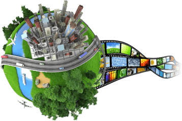
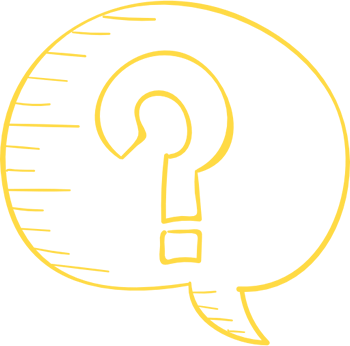

Adana Sanal Tur, özel çekim aletleri ve özel fotoğraflama teknikleri yardımıyla panaromik fotoğraflar elde edildikten sonra fotoğrafların farklı yazılımlarla belirli düzenlemelerden geçirilmesinin ardından özel programlarla birleştirmeleriyle küresel bir görüntü elde edilmesi işlemidir. Fotoğraflar işlendikten sonra Flash animasyonları ile de sınırsız çeşitlilikte zenginleştirilir. Daha sonra isteğinize göre ister web uygulaması şeklinde isterseniz de CD veya DVD ortamında çalışan bağımsız uygulamalar haline getirilir.
SANAL TUR

Adana Sanal Tur bir mekânı internetten tanıtmanın en etkin ve etkili yöntemidir. 360 derecelik bir bakış açısıyla mekânı internetten veya kişisel bilgisayarından gezen potansiyel müşterileriniz, sanki oradaymışlar gibi etraflarına bakınabilirler, bir mekânda aradıkları ya da sizden istedikleri detayları kendileri inceleyebilir ve ilgili mekâna gitmeden mekân hakkında görsel şekilde, gayet iyi bir fikir sahibi olabilirler.
İnternette gördüğünüz bazı örnek çalışmalarda görmüş olduğunuz gibi; bir görüntüden diğer bir görüntüye geçmek, örneğin bir dış mekândan kapının ya da girişlerin üzerlerindeki oklara tıklatarak iç mekâna girmek, özel programlar sayesinde oraya koyulan geçiş kapıları sayesinde kolaylıkla mümkündür
Kullanıcılar, fare yardımıyla bulundukları yerde sağa-sola veya yukarı-aşağı, yakınlaştırma uzaklaştırma ve tam ekran görüntüleme gibi fonksiyonlarla gezinerek mekân hakkında en gerçekçi fikirlere sahip olurlar.
Adana Sanal Tur, Bildiğiniz iki boyutlu fotoğraftan çok daha farklı bir görsellik sunan bir uygulamadır. Öncelikle Adana sanal turun, hareketli oluşu ile videoyu andırsa da aslında bir video değil, bir mekânın çekilebilecek tüm fotoğraflarının çekilip birleştirilmiş versiyonu oluşu, onu ilgi çekici kılmaktadır. Aynı zamanda videodan hızlı yüklenir. Sanal tur ile tanıtılmış bir mekânın akılda kalma oranı çok daha yüksektir. Sanal tur, videodan daha dikkat çekici ve yüksek etkiye sahiptir ve Adana sanal tur diğer reklam alanlarına kıyasla daha kısa sürede, daha etkin ve etkili sonuçlar alınması mümkündür.

Adana Sanal Turun İçeriği ve Fiyatı
Adana Sanal tur fiyatları, firmalara, tahmin edildiği gibi çok yüksek maliyetlere mal olmazlar. Aksine sanal turlar ucuz ancak etkileyici bir tanıtım metodudur. Adana Sanal tur sayesinde yapmak zorunda kalmayacağınız diğer tanıtımların maliyetlerini ve sanal tur aracılığıyla tanıtım yaptığınız için kazanacağınız ekstra zamanı da göz önünde bulundurursanız, sanal turun seçilebilecek en etkileyici ve en pratik tanıtım aracı olduğunu görürsünüz
Peki, Adana sanal tur fiyatları nasıl belirlenmektedir ?
Adana Sanal tur, son on yılda revaçta olan bir tanıtım aracıdır. Fotoğrafçılar ve teknisyenler interaktif sanal tur deneyimini geliştirmek için çalışmaktadırlar. Geliştirdikleri teknolojilerle fotoğrafçılık firmaları ve reklam ajanslar sanal tur fotoğrafçılığı sistemini bu hizmeti almak isteyen şirketler için daha basit, daha yüksek kalitede, daha düşük maliyetli bir şekle getirmek için çalışmaktadırlar.
Adana Sanal tur çekim fiyatları, diğer fotoğrafçılık hizmetlerinde de olduğu gibi genellikle sahne ve çekim sayısına göre belirlenmekte ve genellikle ulaşım ile konaklama giderleri de müşteri tarafından karşılanmaktadır. Adana Sanal turun fotoğraf çekim sayısı arttıkça birim maliyeti düşmektedir. Çekim yapılacak sektör, çekimde model kullanılması gibi faktörler de fiyatı etkiler.
Firmalar hazırladıkları sanal turlar için çeşitli paketler ve çeşitli kategorilerde ürünleri müşterilerine sunmakta ve her bütçeye uygun sanal tur içeriği hazırlamaktadırlar. Standart bir sanal tur, 180° ve 360° dört yöne sahneleri içinde barındırır. Ayrıca altı dönüşe kadar panoramik fotoğrafları ve tam ekran ve küçük ekran görüntüleme seçeneklerini de müşteriye sunar. Standart bir sanal tur paketinde firmaya özel tasarımın yanı sıra bilgi içeren önemli alan işaretleri ve arka plan müziği de bulunmaktadır. Ayrıca Android, iPad ve iPhone gibi mobil cihazlara uyumlulukları ile bu sanal turların teknolojiye uyumluluğu artırılmaktadır.
Sanal turlar indirilebilir olmalı ve istenildiği takdirde bazı yerlere firmanın veya markanın logosu yerleştirilmelidir. Aynı zamanda bu sanal tur tüm web tarayıcılarında görüntülenebilmelidir.
Eğer firma tarafından bu pakete alternatif olarak geliştirilmiş bir sanal tur paketi sunuluyorsa o pakette de ilave özelliklerin bulunması gerekmektedir. Bu ilave özelliklere örnek olarak firmaya bir internet sitesinin kurulumu, hosting hizmetinin verilmesi, SEO hizmetinin verilmesi, sanal turların CD ve DVD ortamına kaydedilmesi ve seslendirme hizmetinin verilmesi sayılabilir.

Sanal Tur Neden Önemlidir ?
Adana Sanal tur işletmenize ya da kurumunuza ait üstünlüklerinizi gözler önüne seren yeni nesil bir tanıtım metodudur. Adana Sanal tur web sitenizi ziyaret eden kullanıcılar arasındaki potansiyel müşterilerinizi etkileyerek rekabete rakiplerinizden bir adım önde başlamanıza yardımcı olur. İnternet üzerinde var olmanız markanıza katkı sağlamıyor olabilir. Sitenize gelen ziyaretçilerinize markanızı ve kalitenizi gerçekten yansıtamıyor da olabilirsiniz. Ziyaretçilerinize oradaymış hissi vererek mekanlarınızı gezmelerini sağlayan, 360 derece sanal tur çekimleri ile potansiyel müşterilerinizin bilgisi dahilinde olmayan ya da onlara karşı ön yargılı oldukları mekanlarınızı, müşterilerinize kendi bilgisayarlarının başında gezdirerek sizi tercih etmeleri için karar vermelerine yardımcı olabilir, sorularını yanıtlamalarını sağlayabilirsiniz.
Ayrıca bir mekânda potansiyel müşterilerinizi gerçek hayatta gezdirmenin zorluğu ve bazen de imkânsızlığı da sanal tur sistemi ile kolayca aşılabilmekte, dünyanın farklı yerlerinde onlarca kişi aynı anda mekânı gezebilmektedir.
360 derece olan sanal tur panorama tekniği ile hazırlanır. Adana Sanal tur projelerimiz mekânın özellikle önemli olduğu hizmet iş kollarında daha çok tercih edilmektedir. Örneğin bir otel Adana sanal turu veya hastane sanal turu ya da bir okul sanal turu ziyaretçilere mekânlarınızın arka planı olan mutfak, lavabolar, ek tesisler vs. gibi yan alanlarına kadar sizin ve müşterileriniz için önemli tüm noktalarını sürekli olarak internetten kolayca paylaşmanıza olanak tanır.
360 derece Adana sanal tur, otel, hastane, okul, anaokulu, müze, yurt, dinlenme tesisi, bitmiş ya da hala inşaat halindeki emlak, inşaat projesi, mağaza, fabrika, çeşitli tesis, park ve bahçe gibi açık ve kapalı tüm mekânlarınız için hazırlanabilmektedir.
Bir Adana sanal tur projesinin anlamlı olabilmesi için en az 8 küre ile yapılması önerilmektedir. Bir proje içinde birbirine bağlanmış küre sayısında teknik olarak bir limit bulunmamaktadır.
360 derece Adana sanal tur sistemleri, iPhone, iPad, Android gibi yeni nesil mobil cihazlar ile de tam uyumlu olup, tüm web tarayıcıları ile de tam bir uyum halinde çalışmaktadır.
360 derece Adana sanal turun, bu kadar çok alanın destekliyor oluşu ve uyumluluğu da ziyaretçilerinizin sayısını arttırmaktadır.
Adana Sanal Turun Reklamcılığa Faydaları
Adana Sanal tur, genellikle bir mekanda çekilebilecek her açıdan fotoğrafın çekilmesi ve bu fotoğrafların birleştirilmesiyle oluşturulmuş bir simülasyon olarak karşımıza çıkar. Görsel turlarda genellikle ses efektleri, müzik, sesli anlatım ve metin gibi yardımcı etmenler de kullanılabilir. Adana Sanal Tur tanımı, bir mekân için, video ve fotoğraf tabanlı medya çeşitlerini tanımlamak için de kullanılmaktadır. Ayrıca sanal turun gerek müşteriler gerek ise ürün veya hizmet sahibi için büyük faydaları vardır.
Günümüzde insanların %85’i bir ürün ya da servisi almadan önce internet üzerinde araştırma yapmaktadır. İçinde bulunduğumuz internet, sosyal medya ve gelişmiş pazarlama ağı içerisinde müşteriyi en kısa sürede etkilemek artık tamamen bir sanat yerini almıştır. Bu yüzden, mekânınızı ya da ürününüzü sunmak için sanal turdan daha etkileyici bir yol bulmak oldukça zordur.
Dilerseniz, ürün veya hizmetinizi müşterilerinize sanal tur ile sunmanın sizlere getirdiği faydalardan birkaç tanesini paylaşalım.
Her şeyden önce 360 derece sanal turlar gayet uygun maliyetli bir pazarlama aracıdır. Müşterileriniz herhangi bir randevu almak zorunda kalmadan sanal mağazanıza girip ürünlerinizin yüksek kalitede imajlarını ayrıntılı olarak inceleyebilir. Üstelik bunu yaparken kendilerini oradaymış gibi hissetmeleri de gerçek hayatta mümkün olmayan birçok seçeneği karşınıza çıkarır. Aynı anda birçok kişi aynı mekânı birbirinden habersiz gezebilir ve fikir edinebilir.
Sanal turlarda müşteriler, bir mekânı isterlerse on dakikada isterler on saatte gezerler, onlara verilen bu zaman özgürlüğü de hizmetiniz hakkında daha çok fikir edinmesine yardımcı olur. Ayrıca bir sanal tura, dünyanın her yerinden günün her saatinde giriş yapılabilir. Ancak, mekânların bir saatten sonra mutlaka kapanması gerekmektedir. Adana Sanal tur ile dil sorunu da yoktur. Yeri gelir bir fotoğraf bin kelimenin yerini tutar ve uluslararası müşterileriniz de sizin mekânınızı, ürünlerinizi ve hizmetlerinizi söze gerek kalmadan güven içinde incelerler.
Eğer bir otel sahibiyseniz online rezervasyonlarınızı sanal turlarınız sayesinde artırabilirsiniz.
Ayrıca sanal turlar, internette çevrimiçi yayınlanabildikleri gibi CD-DVD-USB gibi aygıtlar sayesinde internet bağlantısı olmayan yerlerde de kullanılabilir.
Sanal turlar, iPhone, İPad, Android gibi mobil cihazlar için uygun olarak hazırlanabilmektedir.